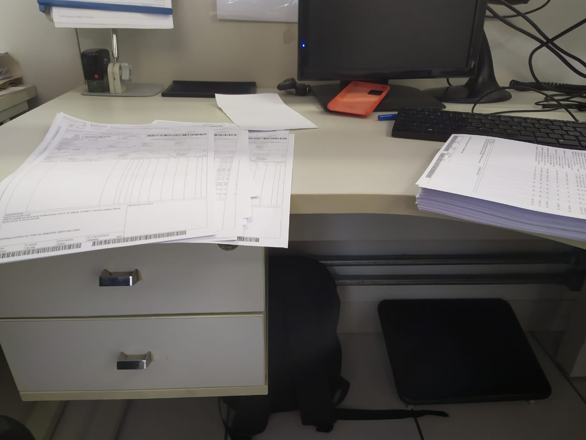
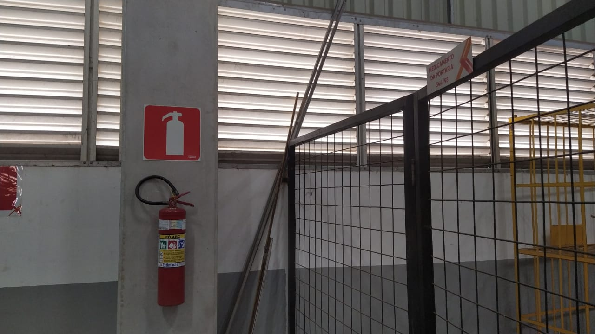

Relatório da Auditoria 5S do mês de Setembro - 1° Turno
O que é 5S?
O que é o método 5S? A ferramenta 5S é um método que visa melhorar o
ambiente de trabalho e aumentar a produtividade e a qualidade total
das entregas da companhia, tendo como base cinco sensos: utilização,
organização, limpeza, bem-estar e autodisciplina.
Quais são os 5S?
O 5S é um conjunto, desenvolvido no Japão, de cinco práticas destinadas
a promover a organização, a limpeza e a eficiência no ambiente de trabalho.
São elas: Seiri (senso de utilização), Seiton (senso de ordenação),
Seiso (senso de limpeza), Seiketsu (senso de padronização) e Shitsuke
(senso de disciplina).
Áreas de apoio
Expedição
Capa de celular, chaves e mochila fora do local adequado
Demais áreas de apoio
Itens pessoais sobre a mesaEquipamento sem uso fora do local adequado
Distribuição
Equipamento sem condições de usoMesa do setor empoirada
Equipamento sendo segurado por gambiarra
Palete fora do local
Palete com prego exposto
Caixa de energia extremamente suja e com aranhas

Placas com informações erradas - não temos empilhadeira nem transpaleteira
Esteira não possuí local demarcado
Carro fora do estacionamento. Carretinha, equipamentos de jardinagem e escadas fora do local de armazenamento
Porta das docas sujas com teias aranhas
Barra de reforço das portas extremamente sujas
Checklist de limpeza dos setores desatualizadas
Faltam placas com nome das rotas

Descarga
Rampa com guarda corpo quebradoRampa sem guarda corpo
Garrafinha de água sobre a mesa do setor
Equipamentos inúteis sob a mesa - Relógio, capa de celular, escova de aço e vários outros
Pregos e parafusos fora do caixa de ferramentas
Celular pessoal sobre a mesa do setor
Mesa e cabos do computador sujos
Cabo, garrafa de água e caixa no chão na porta da doca
Transferência
Sujeira e teia de aranha na colunaPalete fora do local demarcado
Impressora do setor empoeirada
Automatic
Risco de ferimento por arames soltos
Mesmo caso de risco, porém em outro local
Fezes de pássaros no chão do setor
Demarcação dentro de demarcação.
Resto de etiqueta no chão
Empilhamento de paletes incorretos
Chão do setor sujo e empoeirado
"Eu e casca de bala..."
Informativos do local do motorista danificado e tampando a numeração
Ponta de vergalhão exposto, só esperando alguém pisar ou cair em cima
Fios sujos e desorganizados
Gambiarra no sistema de segurança da esteira
Carro ao lado da rampa, fora do estacionamento
Barra de ferro usada para fechar a doca fora da condição ideal de uso
Coleta
Caixa vazia e cantoneiras não possuem local de armazenagemPaleteiras não possuem local de armazenagem
Caixas fora da simbologia e ultrapassando a área do palete
Palete com prego exposto
Porta palete
Caixa de energia elétrica extremamente sujo - 1Caixa de energia elétrica extremamente sujo - 2
Caixa de energia elétrica extremamente sujo - 3
Plataforma de distribuição de fios extremamente sujo
Perdas e Danos
Barras de metal fora do local ideal de uso ou armazenagem
Gambiarra com fita adesiva na fonte de energia elétrica
Fios sujos e desencapados
Resultado
Auditor 5S - 1° turno
- Danilo Monteiro da Silva
Lider 5S - 1° turno
- Gustavo Otto Souza Kind